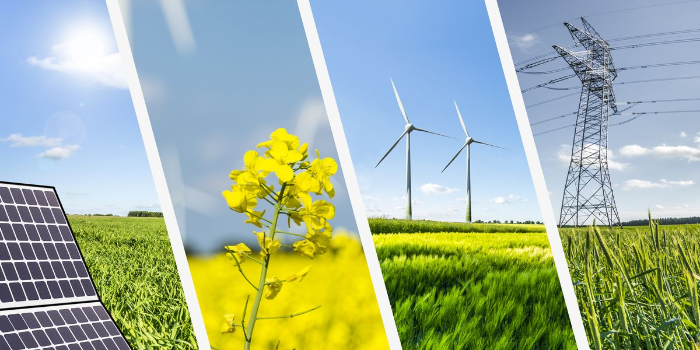
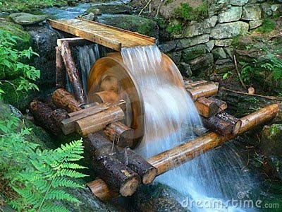

14 de Febrero: Dia Mundial de la Energia

Ejemplo de diferentes formas de energia
¿Que es la Energia?
La energía es la capacidad que tienen los cuerpos para producir trabajo, como trabajo mecánico, emisión de luz, generación de calor, etc. Puede manifestarse de distintas formas: gravitatoria, cinética, química, eléctrica, magnética, nuclear, radiane, etc., existiendo la posibilidad de que se transformen entre sí, pero respetando siempre el Principio de Conservación de la Energía: “La energía no se crea ni se destruye, sólo se transforma”
El Sol y la Energia
Prácticamente toda la energía de que disponemos proviene del Sol. El Sol produce el viento, la evaporación de las aguas superficiales, la formación de nubes, las lluvias,etc.. Su calor y su luz son la base de numerosas reacciones químicas indispensables para el desarrollo de los vegetales y de los animales, cuyos restos, con el paso de los siglos, originaron los combustibles fósiles: carbón, petróleo y gas natural.
Gracias al Sol, exite la vida y el dinamismo en la Tierra
El hombre y la energia
El hombre de las cavernas era esencialmente carnívoro; la única energía de la que disponía era su propia fuerza muscular, que utilizaba, fundamentalmente, para cazar alimentos. Con el descubrimiento del fuego el hombre primitivo pudo acceder, por primera vez, a algunos servicios energéticos como cocinar, calentar la caverna y endurecer las puntas de sus lanzas.

Hace unos 8000 años el hombre comienza a explotar la tierra con fines agrícolas y ganaderos y aprende a domesticar animales de tiro, por lo que ya no tiene que valerse sólo de su fuerza muscular
Cuando ni su propia fuerza muscular, con la ayuda de la de los animales, fue suficiente para satisfacer las crecientes demandas energéticas de las sociedades en expansión, apareció la esclavitud, con lo que pasó a utilizar la energía de muchos hombres al servicio de un número reducido de hombres libres.
Hace unos 2000 años el hombre comienza a utilizar fuentes energéticas basadas en las fuerzas de la naturaleza, como es la del agua y, hace unos 1000 años, la del viento.Aparecen así los molinos de agua, primero, y los de viento, después, que se utilizaron en sus orígenes para moler grano.

Arriba se puede apreciar un molino de agua, y abajo, un molino de viento.
Hacia finales del siglo XVIII se produce un hecho trascendental: la invención de la máquina de vapor, un dispositivo que permitía convertir el calor en fuerza mecánica (se quema el carbón, produciéndose calor, que es utilizado para evaporar agua; el vapor a su vez se utiliza para accionar dispositivos mecánicos).Y con la máquina de vapor llegó la 1.ª revolución industrial, que tuvo enormes repercusiones en el ámbito social y económico. Estas máquinas de vapor utilizaban carbón como fuente de combustible y representaron el comienzo de la era fósil, generalizando el consumo de los combustibles de origen fósil.
Imagen ilustrativa de la Revolución Industrial
Casi un siglo después de las primeras máquinas de vapor empieza a introducirse una nueva forma de energía: la electricidad. Por lo que, ya no era necesario que el lugar del consumo de la energía fuese el mismo en el que se generaba y, además, esta forma de energía se podía transformar fácilmente en luz,en calor,en frío, en movimiento, en energía mecánica,etc.,pero no es hasta finales del siglo XIX cuando empieza a introducirse en la vida cotidiana.
Bombillo: Transforma la Electricidad en luz.
Generacion de electricidad a partir del vapor de agua.
En la segunda mitad del siglo XIX aparecen los primeros motores de combustión interna y, con ellos, los automóviles, y en el último tercio de ese siglo se empiezan a emplear como combustible el petróleo y sus derivados
Automovil, vehiculo que se acciona por medio de un motor de combustion interna
Generacion de electricidad a partir del vapor de agua y gas natural.
En la primera mitad del siglo XX empieza a utilizarse el gas natural, y a partir de los años 50 se ponen en funcionamiento las primeras centrales nucleares.
Generacion de electricidad a partir de la energia nuclear.
Clasificacion de la Energia
| Clase | Definicion | Ejemplos |
|---|---|---|
| Renovable | Su potencial es inagotable, ya que provienen de la energía que llega a nuestro planeta de forma continua, como consecuencia de la radiación solar o de la atracción gravitatoria de la Luna | Energía hidráulica, solar, eólica, biomasa, geotérmica y la energia marina. |
| No renovable | Existen en la naturaleza en una cantidad limitada. No se renuevan a corto plazo y por eso se agotan cuando se utilizan. | Petroleo, carbon, Gas Natural y Uranio |
| Primaria | Es la que se obtiene directamente de la naturaleza y corresponde a un tipo de energía almacenada o disponible | Petróleo, el carbón, el gas natural, el uranio y las energías renovables. |
| Secundaria | Se obtiene a partir de transformaciones de la energía primaria. | Electricidad, derivados del Petroleo |
| Util | Es la que obtiene el consumidor después de la última conversión realizada por sus propios equipos de demanda. | Energía mecánica gastada en un motor |
Bibliografia
- Energías renovables y eficiencia energética (Rodriguez et al. 2008)